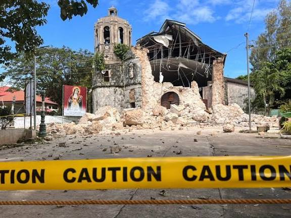

EARTHQUAKE

Story
An earthquake is a natural disaster that happens when the ground suddenly shakes because of movement along cracks in the Earth's crust called faults. The shaking can be weak or very strong, depending on the amount of energy released underground. Earthquakes can happen without warning, which makes them difficult to predict. During a strong earthquake, buildings, houses, roads, and bridges may become damaged or completely destroyed. Objects inside homes can fall, walls may crack, and power lines can be damaged. In some places, earthquakes can also trigger landslides, fires, and tsunamis, especially when they happen near the sea. Earthquakes can cause injuries, loss of lives, and damage to important facilities such as hospitals and schools. Families may be forced to leave unsafe homes and stay in evacuation areas while buildings are inspected. Aftershocks may also happen after the main earthquake, causing additional shaking and damage. Earthquakes remind us that preparation is very important because they can happen at any time. Knowing the proper safety actions, such as Drop, Cover, and Hold On, can help protect people during an earthquake.
Strong earthquakes can damage buildings, roads, bridges, and other structures. The Philippines experiences earthquakes because it is located along the Pacific Ring of Fire.
Consequences
- Cracked or collapsed buildings
- Injuries caused by falling objects
- Damaged roads and bridges
- Landslides and possible tsunamis
The number of houses destroyed depends on the specific earthquake. Do not use a general number without identifying an event.
How Should We Prepare?
- Prepare an emergency bag.
- Secure heavy furniture and objects.
- Know safe places inside your home or classroom.
- Practice Drop, Cover, and Hold On.
During shaking, drop to the ground, cover your head and neck, and hold on.
Emergency Hotlines - Naga City, Cebu
National Emergency Hotline: 911
Naga City CDRRMO: 0916-316-4638 / 0908-413-7220
Fire Station: 0969-410-6706
Use your own area's official emergency numbers if your assigned location is different.
Sources: PHIVOLCS